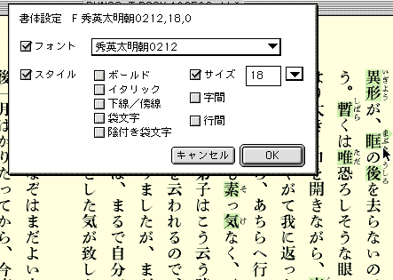
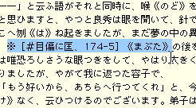
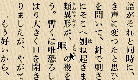
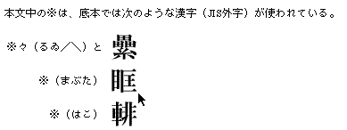

青空文庫と外字
インターネットの電子図書館、青空文庫は、著作権の切れた作品を電子化して公開することを、役割の一つとしている。著者の死後50年を経た、比較的古いタイトルをテキスト化しようとすると、しばしばJIS漢字コード（本稿ではJIS X 0208を指してこう書く）にない文字に突き当たる。これらに対処するため、文庫では独自の方針を定めてファイルを処理していったが、収録作品がある程度まとまった段階で、外字に関する情報だけを抜き出せば資料性をもつことに気付いた。たくさんの人に読まれてきた作品に現れるどんな文字が、JIS漢字コードで表せないかを特定できれば、規格の拡張を検討する際には有用であろう。おりから、JIS漢字コードの拡張計画が進められていたことを踏まえ、電子化された作品を作業対象として、外字情報のとりまとめを行った。
青空文庫の誕生
青空文庫は、インターネットを使って作った、無料公開の電子図書館である。1997年８月、私的なウェッブページとしてスタートし、入力や校正にあたるボランティアの協力者を数多く得て、テキストアーカイビングの拠点の一つとして機能するようになった。
収録作品は、大きく二種類に分けられる。著者の死後50年を経て著作権の切れたものと、著作権者が「タダで読んでもらって構わない」と決めた作品である。
一つの作品は、原則的に三つの形式でそろえている。もっとも基本的で、ファイルとしての長い寿命が期待できる、テキスト版。ウェッブブラウザーでそのまま開ける、HTML版。加えて、読みやすさを優先させた、エキスパンドブックと呼ばれる電子本形式に加工したものである。青空文庫の開設を準備し、その後も世話役を務めている「呼びかけ人」は、もともとはこの、エキスパンドブックへの関心を通じて知り合った。
エキスパンドブックははじめ、米ボイジャーによって、1991年に開発された。Macintosh用のカード型データベース、HyperCardをそのまま利用したものだったが、流し込んだ文章をカードをめくりながら追うと、本のページと向き合っているような感覚が味わえた。これが、兄弟会社として設立された（株）ボイジャーによって日本語化され、電子本作成用の開発キットも販売された。キットを購入すれば、自分のMacintoshで簡単にエキスパンドブックが作れた。身近なメディアとしてかつて広く使われた、ガリ版を電子化したようなたたずまいに注目し、自作を仕立てたり、ミニコミの媒体として使おうと考える人が現れた。
ボイジャーはこれを、出版産業へも売り込もうとしたが、Windowsでは読むことができず、当初は縦組みにも対応できないなど制約が多かったことで、プロの支持は得られなかった。米ボイジャーの電子本プロジェクトが尻すぼみに終わる中で、日本のチームはHyperCardを離れ、エキスパンドブックを一から作り直す道を選んだ。新生エキスパンドブックは、文字の輪郭線にそって背景との中間色を配して読みやすさを改善するアンチエイリアスを採用し、当初から縦組みに対応した。1995年2月にはじめてこれを使ったタイトルが発売された当初は、やはりMacintosh用だったが、すぐにWindowsでも読めるようになり、電子本作りも双方のプラットフォームで可能になった。
生まれ変わったエキスパンドブックには、出版のプロからも評価する声があがった。新潮社で、紙以外のメディアの可能性を探ってきたセクションが、文庫本100冊をまとめてエキスパンドブックに仕立て、CD-ROMにおさめる企画を立てた。
『新潮文庫の100冊』CD-ROM版の開発が進められた1995年は、日本でも、インターネットが目覚ましい勢いで普及しはじめる時期だった。
電子本はそれまで、フロッピーディスクやCD-ROMにおさめるという前提で作られてきた。パソコン通信でファイルを送付する手はあったが、カバーできる範囲は特定のサービスの利用者に限られた。配布に関しては、電子化の旨味が十分引き出せていなかったが、ここにインターネットが答えを出した。製造コストにとどまらず、配布の経費も大きく削減できる見通しがたったことで、電子本をインターネットで売ろうとする者が現れ、我々は公共図書館型のモデルを頭に描いて、本を配ろうと考えた。
青空文庫に繋がる直接のきっかけは、当時ボイジャーに籍を置いていた野口英司さん（青空文庫呼びかけ人）が、「長文を公開しているサイトを知らないか」と筆者に尋ねてきたことだった。当初、電子本をターゲットとして文章を読みやすくする仕掛けを工夫していったボイジャーは、私たちの多くがコンピューターの画面上で書き、電子メールやウェブページから流れ込んでくる文章を読むようになった時点で、自分たちの技術をテキストを読む行為一般に拡張していこうと考えるようになった。その過程で、「インターネットの上には、これだけ読むものがある」というプロモーションが計画された。
電子本のさまざまな可能性を検討しようと『本の未来』（アスキー刊）をまとめる中で、私は、古典的な文学作品を電子化して公開する動きが勢いをましていることを知った。アメリカにはプロジェクト・グーテンベルクがあり、インターネットの普及と共に世界中に賛同者を得て、収録タイトルをふやしていた。日本でも、国語学や日本文学の研究者たちの一部が、研究テーマに関連のある著作権の切れた作品をテキスト化し、ウェッブページ上で公開しはじめていた。ぽつりぽつりと作品を置いたサイトが生まれ、続いて、「どこにどんな作品が置いてある」というリストが作れるようになった。福井大学教育学部の岡島昭浩先生による「日本文学等テキストファイル」を見ると、かなりの作品がリストアップされていた。ここを紹介すると、野口さんから「凄い！」と返事があった。肯定的な反応に心が弾んで、「こうした動きに、エキスパンドブックの読みやすさを加えれば、誰もが利用できて本当に読む気にもなる、電子図書館が作れる」と書いた。
青空文庫は、ここからはじまった。
外字にどう向き合うか
開館に向けて最初にやったのは、岡島先生への連絡だった。電子化にあたった人から許可が得られるなら、リストにあるものをまずエキスパンドブック化し、青空文庫の最初の収録作品にしようと考えた。手始めに、岡島先生が電子化したテキストを使わせてもらえないか打診し、快諾を得た。
研究者の電子化の意図は、読みやすいファイルを作ることにはない。取り組む作品を、検索可能なものに仕立てておくことが本来の狙いだ。入力の下敷きとする底本に、JIS漢字コードにない文字が現れた場合、別の漢字や平仮名に置き換えてしまうと、研究対象としての資料性が損なわれる。岡島先生のテキストでも、外字の位置には記号が置かれ、「何偏に何」と文字の作りを示すコメントが添えてあった。
青空文庫の準備に向けて集まった四人の中には、私を含めて、編集者として働いた経験をもつ者が、二人いた。ごくごく小規模なものとはいえ、電子図書館らしきものを整備しようとするなら、電子化したファイルが何を底本としたものかを示しておくことは必要だと、私たちは編集者としての視点からそう考えた。
作品を構成する文章は、どこかからふっと現れ出るものではない。筆者が書いたものにまず、編集者による原稿整理の手が加わる。それをなぞって活字が組まれ、何度かの校正を経て、ようやく印刷物になる。それらの多くははじめ、新聞や雑誌に掲載され、著者や編集者の手直しを経て、本になる。旧字旧仮名で書かれた作品は、文庫本化に際してしばしば現代表記にあらためられる。全集が編まれる際などには、こうした工程を見直したりさかのぼったりして、著者の本来の意図により近い形に本文が手直しされることがある。こうした連続的な流れの中にある文章を、どの版に基づいて電子化したか明記しておかなければ、出来上がったファイルは受け渡しの道筋から外れた迷子になる。
この、底本を明記することの意味は、JIS漢字コードで表せない文字が現れた際は、「何偏に何」といった注記を施すことによって、はじめて満たされる。外字を恣意的に書き換えていたのでは、底本からテキストを引き継いだことにはならない。何らかの必要性があって表記を変更する場合には、「何をどう変えた」という作業履歴を付ける必要がある。岡島先生のファイルにあった外字の注記は、私たちも当然のこととして受け止めた。
「本文の途中に注記を挟み込んだのでは読みにくい」という問題はあったが、青空文庫では、当初からエキスパンドブック版を用意するつもりでいた。読みやすさは、こちらで実現すればよいと踏ん切ることができた。エキスパンドブックには、画像が貼り込める。外字が現れる箇所にはスペースを入れておき、そこに画像化した文字を貼り込んでやれば、読んでいる側にはまったく気付かれない形で処理できる。
外字を画像化するには、作字ソフトを用いて、偏やつくりなどを組み合わせる必要があると思われるかもしれない。外字にぶつかるたびに、一つ一つ作字するしかないとすれば、かなりやっかいなことだ。だが、青空文庫の準備に取りかかっていた1997年春の時点ではすでに、この作業に利用できる、便利な道具が現れていた。『新潮文庫の100冊』を制作する過程で、大日本印刷によって開発された、秀英体TrueTypeフォントである。
このフォントに、青空文庫は大いに助けられた。その事情を理解してもらうには、紙の上で育んできた漢字に関する秩序意識を電子本でも堅持しようとした結果、新潮社のスタッフがどんな努力を積み重ねたのかを説明する必要がある。
編集者の秩序意識とJIS漢字コード
編集者の多くは、漢字の字体に関して、次のような共通する秩序意識をもっている。
１ 印刷物には、文字本来の形を示した「正字」を用いる。「本来の正しい形」とは、康熙字典に示されたものとする。
２ 字体を簡易化した「俗字」は、用いない。
３ ただし、戦後の国語改革において「日常使用する漢字の範囲を定めた」当用漢字には、大幅に簡易字体が採用された。これらは本来「俗字」ではあるけれど、公に定められたものである。そこで、ここで採用された「俗字」は「新字」と位置づけ、これに限っては簡易字体を使用する。
４ 当用漢字に代わって、現在は常用漢字が用いられている。そこで常用漢字表に採用されている「俗字」は「新字」と位置づけて、これを用いる。加えて、人名漢字別表に示されている「俗字」も、「新字」として扱う。
５ 「新字」には、偏やつくりなどの漢字を構成するパーツごとに、簡略化するかしないか、する場合にはどう簡略化するかという規則を定め、それに基づいて形が決められたものがある。本来この簡略化のルールは、当用漢字（後には常用漢字）と人名漢字のみに適用されるべきものである。ところがこの枠を踏み越して、「正字」に簡略化ルールを適用してしまった例がある。朝日新聞による、いわゆる朝日文字などがそれだ。こうした「拡張新字」は使用しない。
こうした秩序意識を、ディスプレイ上でも守り通したいと考える編集者は、JIS漢字コードに向き合って、大きくは二つの問題が存在することに気付く。
一つ目は、JIS漢字コードにない、外字の存在だ。ないのだから、これはなんらかの方法で必要な文字の形を用意して、表示できるように工夫するしかない。
問題の二つ目は、JIS漢字コードに基づいてデザインされたフォントが、ある種の文字に関して、「俗字」しか用意していないという点だ。例えば「辻」は、当用漢字（常用漢字）には含まれていない。よって編集者はこれを、「正字」で示すべきであると考える。康熙字典に示された形に従って、しんにょうの点は二つなければならない。
1978年に制定されたJIS漢字コードの第一次規格は、簡易字体で例示するものを、当用漢字と人名漢字に含まれるものに限っていた。「辻」の例示字形には、しんにょうに点が二つあった。ところが1983年の改正時に、常用漢字と人名漢字にないものも含めて、第１水準の例示字形すべてに、簡易字体が採用された。「辻」は常用漢字にはないが、第１水準には含まれる。第二次規格では、簡略化ルールが適用されてしんにょうの点が一つになった。フォントの設計者は、例示された字形を参照し、「辻」の点を一つとしてデザインした。編集者からすれば、点一つの「辻」は「俗字」であり、二点のものに変更を求めたい。ところがどのフォントを当たってみても、「辻」はみんな一点でデザインされているという結果になった。
「使いたいのに、ない文字がある」ことと「正字がなくて俗字だけのものがある」というJIS漢字コードの二つの問題点を解決するために、新潮社は独自の表示フォントを用意しようと考えた。
必要な外字に関しては、JIS漢字コードの空き領域を中心に配置していく。加えて、本来は「正字」で示すべきであるにもかかわらず、第１水準にあるために規格表中で「俗字」が例示されているものは、「正字」でデザインし直す。「辻」は、二点しんにょうとする。この方針に基づいて大日本印刷によって開発されたのが、『新潮文庫の100冊』CD-ROMにバンドルされた、「秀英太明朝.DNP3SIN1」だった。マッピングされた外字を確認していくと、配列には規則性が感じられない。おそらくは収録作品を入力していって、外字にぶつかるたびに順番に区点位置を与えていったのではないかと思われる。
1995年12月15日発行の『新潮文庫の100冊』では、かなり泥縄的に用意された専用フォントセットは、1997年1月24日発行の『明治の文豪』では、体系的に整理し直されている。変更の柱は、補助漢字（JIS X 0212）のフォントセットをあらかじめ一式用意した点だ。
エキスパンドブックは、一字単位で使用するフォントを指定できる。この機能を活かし、補助漢字にあるものが現れたら、そこだけセットを0212に切り替えてやる。さらに補助漢字にもないものにぶつかったら、「GAIJI」と名付けたもう一つ別のフォントセットに登録しておき、こちらに切り替えて対処する。（実際には、記号類にも専用の「KIGOU」セットが用意され、『明治の文豪』以降の新潮社CD-ROMシリーズには、「秀英太明朝0208」、「秀英太明朝0212」、「秀英太明朝GAIJI」、「秀英太明朝KIGOU」の四種類がバンドルされた。）

図版の右端でカーソルが指し示している「まぶた」は、JIS X 0208にはない外字である。『大正の文豪』（新潮社）に収録されたこの作品では、開かれた書体設定ウィンドウに見るとおり、「まぶた」の一文字だけが補助漢字のフォントセット「秀英太明朝0212」に切り替えられている。
秀英太明朝は、画面上での表示の美しさにおいても優れていた。ボイジャーはここに着目し、大日本印刷と交渉して、エキスパンドブック関連製品に秀英太明朝をバンドルしていった。エキスパンドブックの延長線上に開発された汎用テキストリーダー、T-Timeでも、バンドルは継続された。
秀英太明朝が開発され、少しずつ普及していったことは、青空文庫にとって、二つの点でメリットがあった。
一つ目は、ここに用意された外字のフォントを利用することで、漢字のパーツを組み合わせて作字する必要がほとんどなくなったことである。処理すべき外字が現れたら、先ず補助漢字規格表の部首索引を参照して、該当の漢字がないかを探す。見つかれば、区点位置をメモしておく。続いてAdobe Photoshopのような画像処理ソフトを開き、入力用のフォントを「秀英太明朝0212」に切り替えて、区点位置を頼りに入力する。補助漢字になければ、「秀英太明朝GAIJI」を探す。記号類は、先ず間違いなく「秀英太明朝KIGOU」にある。ここまでの作業で、大半の外字が見つかる。それでもどうしてもないものに関してのみ、パーツを組み合わせた作字を行えばよい。
エキスパンドブックは、インストールされているフォントの中から適合性の高いものを探して、表示に用いるように初期設定されている。秀英太明朝はその最上位に位置づけられている。これで画像化しておけば、周囲の文字列に溶け込んで違和感を生じさせない可能性が高いという点も、頭にあった。
秀英太明朝の存在には、校正の場面でも助けられることになった。校正は、ほとんどの協力者が、底本と入力済みファイルのプリントアウトを引き比べて行う。この作業に新しく取り組む人の中からは、しばしば「『辻』のしんにょうは、点が一つでよいのか？」といった質問がよせられた。JIS漢字コードの第二次規格で、簡易字体に差し替えられたものは、編集者のチェックを受けた紙面の上ではまず間違いなく「正字」で示されている。両者の形の差異は、校正者に「この字でよいのか？」という疑問を抱かせる。その際、1997年の改訂時にJIS漢字コード規格が明確化させた包摂概念や、過去の規格改訂の経緯を踏まえて、なぜこのような事態が起こっているのかを説明することはかなりの難事である。当初は問い合わせがあるたびに一からの説明を試みていたが、その後、校正用のプリントアウトを秀英太明朝で打ち出せば、結局は悩んでもらってもしょうがないこの問題をすり抜けられることに気付いた。
外字データ収集プロジェクト
「現在のJIS漢字コードには、ない文字が多すぎる。これでは電子図書館は作れない。文字不足に悩まされないような仕組みを考えるなり、新しい漢字コードを用意するなりするべきだ」といった指摘を目にする。
確かに、滅多なことでは「文字がない」という思いをしなくてすむ漢字コードがあらかじめ普及していれば、新潮社CD-ROMの制作も、青空文庫の作業も、かなり容易になっていただろう。出来上がったファイルも、より使い回しの利きやすいものになっていたはずだ。
表示用のフォントを独自に用意し、切り替えながら使うという新潮社のやり方は、CD-ROMにバンドルしたフォントを、購入者が自分のコンピューターにインストールするという流れを想定できてはじめて成り立つ。専用フォントのないところでは、外字は化ける。基本的にはCD-ROMを買った人だけが正しく読めるという、商売に適合した方法と評価することもできる。
一方、テキスト版では「何偏に何」といった漢字の作りを示し、エキスパンドブック版では外字のイメージを貼り込むという青空文庫の処理方式も、理想からはほど遠い。外字が頻出すれば、テキスト版は注記だらけの読みにくいものとなる。青空文庫にファイルがたまりはじめたことがきっかけの一つとなって、小型の情報機器用のエキスパンドブックブラウザーが、ボイジャー以外によって開発されるようになった。それらでは、グラフィックスの表示機能はたいてい省かれている。結果的に、グラフィックスを貼り込んだ外字の箇所は空白となる。


青空文庫テキスト版では、「まぶた」を「目偏に匡」もしくは「目＋匡」などと示している。
エキスパンドブック版中では、外字の現れる場所にはスペースを挟み、画像を貼り付けている。図では、分かりやすく示すために、意図的に貼り込み位置をずらしてみた。
残るHTML版では、ファイルの末尾に画像を添付し、外字部分に置いた「※」の記号からリンクを張るという処理を行っている。もちろんこれも、表示できない文字になんとか対処しようと試みた、苦肉の策でしかない。

HTML版本文中では外字は「※」で示し、ファイルの末尾に画像で文字の形を示している。
少なくとも明治以降の作品を電子化する場合には、まず「ない文字はない」といった漢字コードがあれば、そうした弥縫的な対処とはほとんど縁をもたなくてすんだはずだ。
だが、基盤が完全でないことを理由に電子テキストのアーカイビングをためらっていれば、よりましな漢字コードを育てることは、いつまでたっても不可能だったように思う。
青空文庫で私たちがやろうとしていることは、テキストの〈交換〉だ。一台の孤立したマシンの画面上に、何万字もの漢字が表示できたり、プリントアウトできたとしても、そのファイルを不特定多数の人の手許で正しく表示できないのなら、少なくとも私たちが目指す〈交換〉の観点からすれば意味がない。あらゆる情報機器への標準的な実装が期待できる、一定規模の漢字コードにしっかりしてもらうことこそが、確かな〈交換〉を幅広く保証する唯一の道だろう。
では、限られた規模の漢字コードにおさまる限られた文字で、日本語の文章中に現れる漢字をより広くカバーするためには、どうすればよいのか。理想的には、これまで作成されてきた膨大な日本語文書の一字一字に当たり、どんな漢字がどんな頻度で現れるか統計を取り、頻度順に収録していく方法がある。確かに有効ではあるが、単独で進めるには、あまりにも膨大で労力を求めすぎるのも事実だろう。だが青空文庫において、我々はまったく異なった動機から、これに類似する作業を進めていたのである。
1998年５月、新JIS漢字コード策定チームの委員長を務めておられる芝野耕司先生から、「青空文庫のファイル中で見つかった外字の情報を提供してくれないか」という連絡をいただいた。第３、第４水準を拡張するにあたっては、実際に日本語の文献の中で使われていることを選定の要件とし、出現の頻度も勘案しながら文字を選んでいく方針であるという。その時点で収録していたファイルを当たりなおし、どの作品のどこにどんな外字が現れるかを「登録作品に現れた外字」と名付けた資料にまとめて提出した。
芝野先生に促されて着手した作業の過程で、私たちは青空文庫の試みが、予想もしなかった意味をもちうることに気付いた。サンプル数があまりに少ないことが残念だったが、当時はすでに、活動に協力を申し入れてくれる人がふえ、入力済みのファイルがどんどん送られてくるようになっていた。策定のスケジュールに照らして、外字資料の拡充にあてられる時間的余裕があったので、この作業を継続して進められないか検討を行った。
外字に関するデータ収集をテーマにトヨタ財団に研究助成を申し入れると、幸いにも1998年11月からの２年間で、480万円の支援を得ることができた。これによって仲間の一名を有給の専従として遇し、作品登録のペースを速めるとともに、外字プロジェクトを継続することができた。新JIS漢字コードの策定チームは、1998年12月に第３、第４水準の原案を示し、1999年２月末を締め切りとして、収録してほしい漢字に関する提案を受け付ける公開レビューを行った。そこで、この間に集中して作業することとした。
当初は、青空文庫の収録ファイルに加えて、『新潮文庫の100冊』、『明治の文豪』、『大正の文豪』をカバーし、さらにさまざまなサイトで公開されているファイルをできるうる限りチェックしたいと考えた。
想定したこれらの課題の内、実行できたのは青空文庫と新潮社CD-ROMシリーズまでだった。他の電子図書館のファイルをチェックできなかったのは、先ず第一に作業に割けるマンパワーが不足していたことが原因である。加えて、調査対象として想定したサイトのファイルが底本を明示しておらず、公開レビューに際して求められていた典拠資料の確保が難しいことも、チェックを諦めた要因となった。
新潮社CD-ROMシリーズの洗い出しは、原案作成に先立って新JIS漢字コードの策定チームによって進められていると聞いていた。だが、たまたま新潮社のCD-ROMで見つけた外字に、原案に盛り込まれていないものがあったので、予定どおり三種類のCD-ROMをすべてチェックすることにした。
対象とした三種類の内、『明治の文豪』、『大正の文豪』にはプロテクトがかけられていなかった。エキスパンドブックの開発キットがもっている、ブックからテキストを抜き出す機能を使って、作業対象とするテキストファイルを簡単に得ることができた。開発キットのエキスポート機能には、二種類がある。クリップボードにコピーし、エディターなどにペーストする方法では、エキスパンドブックのタグのない、〈きれい〉なテキストが得られる。この方法で得たテキスト中では、外字が「〓」として示されたり、目印として利用できる「【補： 】」といった文字列が入るので、作業上助かった。
一方『新潮文庫の100冊』には、プロテクトがかかっていたため、まずテキストファイルを抜き出すことが困難だった。さらにエキスポートが可能になってからも、クリップボード経由で〈きれい〉なテキストを得ることはできず、エキスパンドブックのタグがついたものしか抜き出せなかった。「〓」や「【補： 】」といった目印となりうるものもテキスト中に存在しなかったので、マッピングされた外字を一字ずつ順番に、対象とするファイル中で検索するという方法を採った。ここでヒットしたら、周囲の文字列を確認する。そして今度は、エキスパンドブック上でその文字列を検索し、何ページの何行目に該当の外字が現れるのかを把握していった。ただし、「秀英太明朝.DNP3SIN1」が、JIS X 0208の空き領域に加えて罫線要素をつぶして外字をマッピングしていたことで、ここに示す８文字に関しては、収録作品に含まれているか否かを確認できなかった。エキスパンドブックは、罫線要素をタグとして利用している。プロテクトのかけられている『新潮文庫の100冊』からは、タグまみれとなったテキストしかえられかったので、該当の区点位置で検索をかけると膨大な数のタグがヒットしてしまい、タグとして使われているのか、外字として使われているのか、見きわめられなかったためである。
作業を終了した後に、新JIS漢字コード策定チームでも『明治の文豪』と『大正の文豪』のチェックは行っていたことを知った。数文字の見逃しを補うことはできたが、この２タイトルに関しては、重複したむだな作業をしたことになる。ただし、『新潮文庫の100冊』に関しては、策定チームではチェックできなかったということなので、この点では貢献できたのではないかと考えている。
青空文庫のファイルに関しては、もともと外字の出現位置を明記する処置を行っていたので、データ収集上の困難は存在しなかった。ただ、作業者の数に対して作業量が大きかったために、睡眠時間が減って、大いにくたびれただけだ。
上記の作業を経てまとめたデータは、新JIS漢字コード原案の公開レビューに対するコメントと参考資料として提出し、「文学作品に現れた外字」と名付けて公開している。青空文庫を構成する全ファイルは、アスキー刊行雑誌の付録CD-ROMに定期的におさめられている。外字に関するデータはやや規模が大きいので、興味のある方は、付録CD-ROMに入っているものを使っていただくと良いと思う。
新JIS漢字コードへの対処
テキストを交換する基盤として、我々が想定できたものは、JIS漢字コードだった。
新潮社にしろ青空文庫にしろ、自らが主体となって電子出版や電子図書館に乗りだそうとした者は、JIS漢字コードという与えられた条件の中で、思い描く理想像を引き寄せようと試みた。漢字の使い方に関する編集者の秩序意識に忠実であろうとする新潮社は、第二次規格で新たに例示された簡易字体を「俗」ととらえる姿勢に明らかなように、JIS漢字コードの包摂規準の受け入れを拒否している。一方青空文庫は、依拠する漢字コードの包摂規準は、〈交換〉を一義とする以上、受け入れるしかないという前提に立っている。新潮社と私たちの立場は違う。けれど、電子出版を拓く当事者として新潮社がやってきたことに、我々は多くを教えられた。秀英体TrueTypeフォントという彼らの成果は、外字の書き換えを避け、資料性を保ちながら読みやすさもまた提供するという青空文庫の目標を実現する上で、大きな力となった。誰かが用意した漢字コードに対する批判者にとどまるのではなく、自らが当事者としてテキスト交換の現場に乗りだした新潮社や青空文庫は、当初の動機とは異なるものの、外字情報収集の基礎データを作るという役割を担った。
こうした努力の成果を汲んで制定される新JIS漢字コード（JIS X 0213:2000）が、テキスト交換の新しい共通基盤として認知され、広く利用されることを願ってやまない。早期の普及を目指す上では、フォントセットの提供が欠かせないだろが、加えて芝野耕司先生には、『JIS漢字字典』（日本規格協会）の新JIS漢字コード対応版を、できうる限り早く刊行してくださるようお願いしたい。規格表だけでは、包摂されるのか別字として取り扱われるのかを素早く判断することは不可能だ。青空文庫で、さまざまな人が協力してJIS漢字コードの包摂規準にそった作業を進める上では、使いやすく、規格表に比べれば安価な『JIS漢字字典』が不可欠だった。同様の事情は、新JIS漢字コードを用いてテキストを作ろうとする人の手許すべてで生じるはずだ。
新JIS漢字コードが定められた段階では、青空文庫のファイルを見直し、外字として処理してきたものの内、区点位置が与えられるものを置き換えていく作業を進めたい。新JIS漢字コードの制定に伴って、従来のJIS漢字コードが採用してきた包摂規準が変更され、これまでは一つとして扱った漢字が分かれるケースが出てくる。該当の文字に関しては、あらためて底本にさかのぼり、どちらの漢字とするか決めざるを得ないという、実に悩ましい問題が生じる。けれどテキストアーカイビングの当事者として振る舞うなら、これはやり遂げなければならない仕事だろう。
日本語交換の基盤を改善するために、なにごとかなし得るタイミングで、私たちは青空文庫をはじめることができた。その偶然に感謝したいし、微力を承知で、新JIS漢字コードの策定に貢献しようと努めた自分たちを誇りたい。「自分たち」とは言うまでもなく、青空文庫の活動にかかわってくれた人すべてを指して、そう申し上げている。
筆者：富田倫生
初出：「人文学と情報処理」第26号「特集 文字コード論から文字論へ」、勉誠出版、2000年4月15日発行
ウエッブ版公開：2001年3月15日
トップページに戻る。